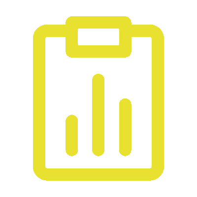
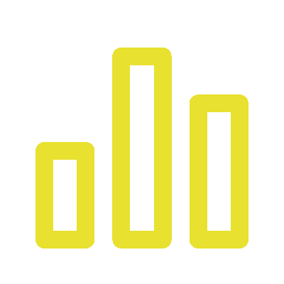
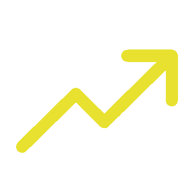

Yield Rate
98.2%
Defect Rate
1.8%
OEE

85.4%
Availability

92%
Performance
88%
MTBF

120h
Control Chart (SPC)
Pareto Analysis
Process Capability (CpK)
Defect Distribution
R-Chart (Range)
The R-Chart (Range) is used to monitor process variability within subgroups.
It tracks the difference between the highest and lowest values in each subgroup,
helping identify shifts, trends, or abnormal fluctuations in the production process.
By highlighting increases in variation, it allows timely corrective actions to maintain consistent quality.
- Tracks the difference between the highest and lowest values in each subgroup.
- Detects shifts, trends, or abnormal fluctuations in the production process.
- Highlights increases in variability that may indicate quality issues.
- Enables timely corrective actions to maintain stable and consistent output.
Sigma Levels
Production Trend
The production trend chart illustrates the total units produced over a defined time period, offering a comprehensive view of overall production performance. It allows managers and team members to monitor output levels in real time, helping detect fluctuations, delays, or sudden increases in production. By highlighting patterns and trends, the chart makes it easier to identify periods of high efficiency or potential bottlenecks in the workflow. It also serves as a valuable tool for comparing performance across different shifts, departments, or production lines. Ultimately, the chart supports strategic decision-making by providing actionable insights to optimize operations and improve overall productivity.
- Shows the total units produced in each time period (e.g., daily, weekly).
- Highlights production trends, peaks, and dips for better planning.
- Detects deviations from expected production patterns.
- Supports timely decision-making to optimize output and resources.